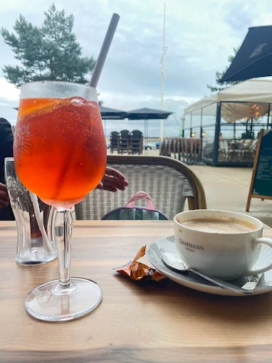
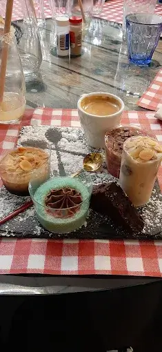
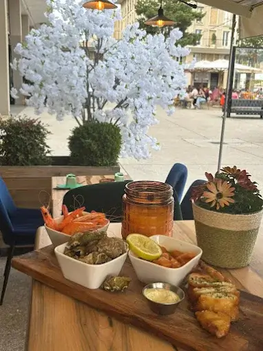

Nos Boissons

Aperol Spritz rafraîchissant en terrasse, accompagné d’un café Dammann.
Desserts Maison

Assiette gourmande : mousse, brownie, tiramisu, crème, café.
Planche Apéro

Tapas de la mer : crevettes, bulots, accras, sauce citronnée.